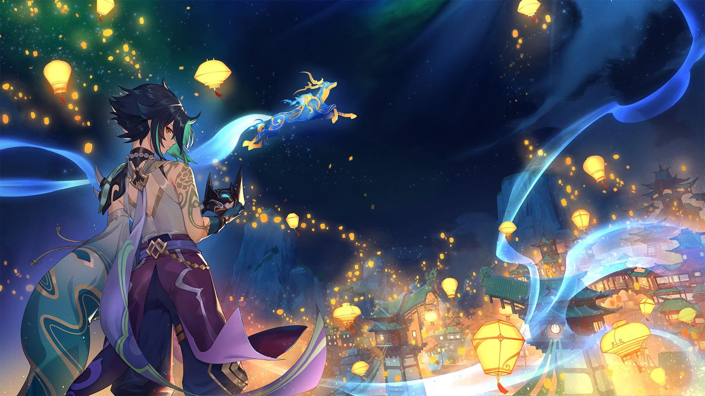
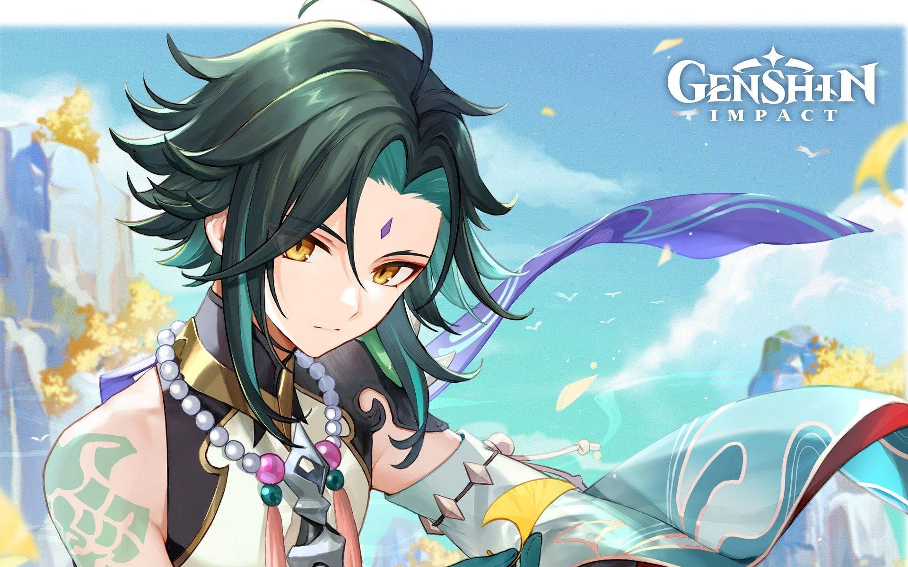

Xiao Guide
Xiao is an Anemo Polearm Character that specializes as a DPS.
Overview
Xiao is popular because of his high-risk, high-reward playstyle. The lower HP he is, the more damage you do, so a certain level of skill is required to play this character effectively. But those who do are rewarded with one of the best characters in the game.

Elemental Skill: Lemniscatic Wind Cycling
Xiao lunges forward, dealing Anemo DMG to opponents in his path. It can be used in mid-air, and starts with 2 charges.
The skill is useful for exploration. It can be used to traverse horizontal gaps and cover greater horizontal distances without consuming extra sprinting stamina (effectively acting like a sprinting boost). The skill can be used while gliding to cover further horizontal distance. If used correctly, Xiao can stay airborne and recover some stamina, which is helpful for reaching places like the Nameless Island. It can also be used to close gaps in combat and quickly evade certain enemy attacks. Other that that, it isn't really used.
Elemental Burst: Bane of All Evil
Xiao dons the Yaksha Mask that set gods and demons trembling millennia ago.
Yaksha's Mask:
Greatly increases Xiao's jumping ability, increases his attack AoE and attack DMG, and converts attack DMG into Anemo DMG, which cannot be overridden by any other elemental infusion. In this state, Xiao will continuously lose HP.
The effects of this skill end when Xiao leaves the field.
This is his bread and butter. All the damage that you're doing as Xiao comes from here. You usually want to go with plunges, as it deals AOE damage and has a very high multiplier. It takes practice to time the plunges correctly, but it pays off.
Constellations
C1: Dissolution Eon: Destroyer of Worlds
A very nice Quality of Life upgrade for a little bit of extra energy.
C2: Annihilation Eon: Blossom of Kaleidos
Inconsequential as Xiao should be on field as much as possible, especially when directly being funneled particles between Elemental Bursts.
C3: Conqueror of Evil: Wrath Deity
+3 to his Skill. Does not impact Xiao’s plunge damage. It is only useful for C6 Xiao.
C4: Transcension: Extinction of Suffering
Useless in 99% of scenarios, especially since his most popular supports are generally Zhongli and good healers like Jean or Bennett.
C5: Evolution Eon: Origin of Ignorance
+3 to his Burst. Also not a big improvement since Xiao gains little overall DPS increase from Q levels.
C6: Conqueror of Evil: Guardian Yaksha
This constellation entirely changes Xiao’s playstyle from plunge-oriented to that of Elemental Skill oriented, assuming that he faces 2 or more enemies. Instead of plunge spam, Xiao’s optimal attack string becomes “dash spam” that consists of a plunge followed by up to 4 Elemental Skills.However, while this constellation brings powerful upgrades, it is not without its detriments. Auto-target can mess up dashes; in-built enemy priority as well as enemy movement RNG can lead to undesirable results especially in speedruns The need to plunge before dash spamming may mess up pre-prepared crowd control making his dash spam harder to use since skill hitbox is rather narrow. If you are a total Xiao Main, this is great, but isn't worth it.
Teams
Xiao is an amazing DPS, but REQUIRES an Anemo Support to battery for him. If that support is also a healer, you don't need to take up 2 slots and can give him more supports.
Xiao + Jean + Fischl
Xiao + Jean + Zhongli